권동현 · Screens
프로젝트의 문제·접근·내 역할과 함께, 각 화면이 무엇을 보여주는지 설명을 붙였습니다. 이미지를 누르면 전체 화면으로 열립니다.
Project 01
LS JUMP-UP · 2026.09 · 3인 팀
설비 경보를 '무엇부터 확인할지'로 바꾸는 예지보전 점검 대시보드
경보가 여러 개 뜨면 담당자는 무엇부터 봐야 할지 판단하기 어렵고, 온도·회전속도·토크·공구 사용시간을 숫자로만 보면 복합 조건을 해석하기 힘듭니다.
한계 합성 데이터의 현재 상태 분류 결과이며 미래 고장 예측은 아닙니다. 학습–시험 F1 차이로 과적합 가능성을 함께 기록했습니다.
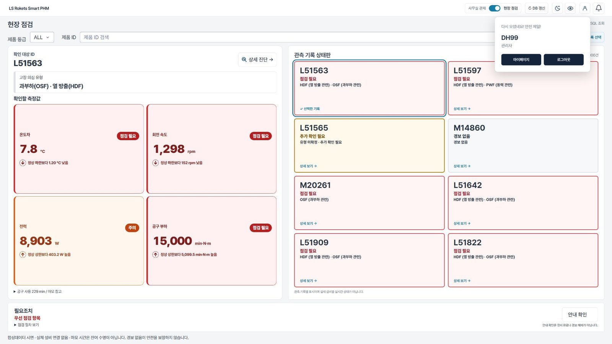
현장 담당자가 보는 점검 화면입니다. 경보가 뜬 설비의 온도·회전속도·토크·공구 사용시간을 카드로 묶어 보여줘, 숫자만 나열했을 때보다 상태를 바로 읽도록 했습니다.
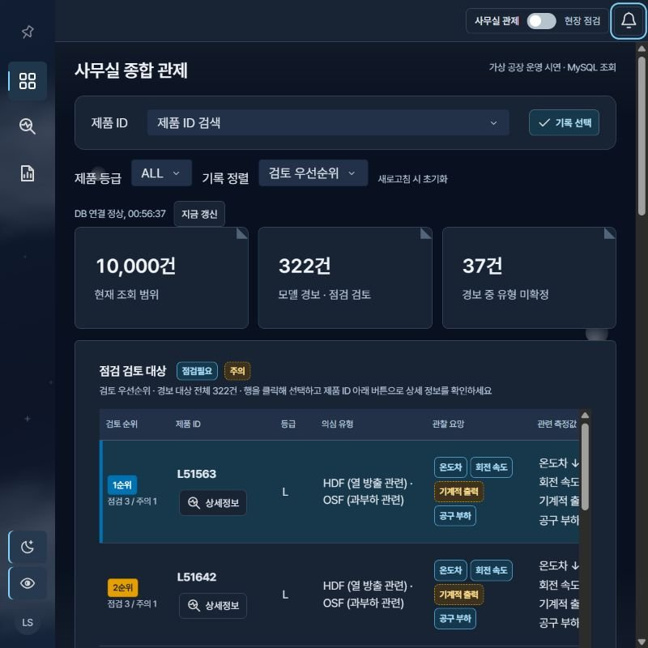
사무실에서 여러 설비를 한꺼번에 보는 관제 화면입니다. 경보가 여러 개 뜰 때 ‘무엇부터 확인할지’를 점검 검토 대상 목록으로 정리했습니다.
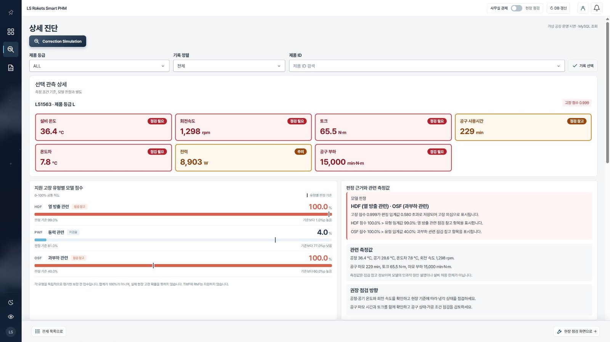
점검 대상으로 고른 설비를 자세히 살펴보는 진단 화면입니다. ‘점검 대상 선정 → 상세 진단 → 조건 조정 검토 → 기록’ 흐름의 두 번째 단계입니다.
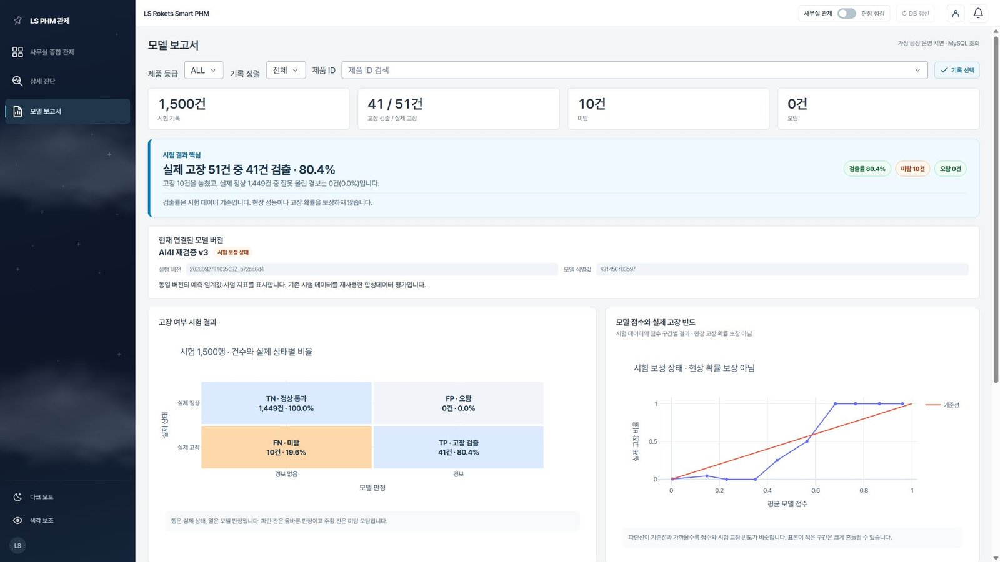
모델 결과를 정리한 보고서 화면입니다. 정밀도 100%, 재현율 80.4%, F1 89.1%이며, 합성 데이터의 현재 상태 분류 결과라 미래 고장 예측은 아닙니다.
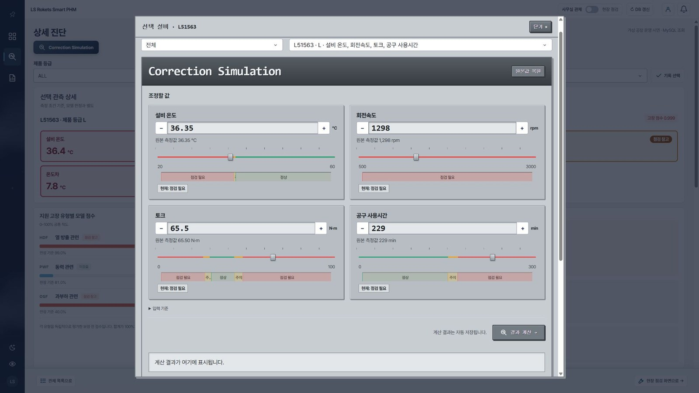
상세 진단의 보정 시뮬레이션입니다. 온도·회전속도·토크·공구 사용시간을 슬라이더로 조정해 정상·주의·점검 필요 구간이 어디서 갈리는지 확인하고, 원본값으로 복원할 수 있습니다.
Project 02
LG DX SCHOOL 최종 프로젝트 · 2024.10 – 12 · 팀장 · 6명 → 4명
모델명을 몰라도 사진 한 장으로 가전을 인식하고, 그 제품에 맞춰 답하는 AI 챗봇 앱
지능형 고객경험데이터 분석 서비스 프로젝트 우수상
커뮤니티·영상 크롤링과 설문 66명을 분석해 보니, 사용자는 설명서를 끝까지 읽지 않고 모델명을 모르면 검색 단계부터 막혔습니다.
한계 인식 성능은 수집 이미지 기준 검증 결과이며, 실제 사용자 촬영 환경은 별도 검증 대상입니다. 앱을 운영하던 서버가 종료되어 현재는 시연할 수 없습니다.
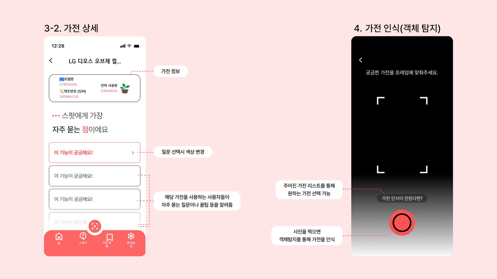
사진으로 가전을 인식하는 단계의 화면 설계입니다. LG 냉장고 4종 이미지 2,088장으로 YOLO11x를 전이학습해, 모델명을 몰라도 제품을 찾을 수 있게 했습니다.
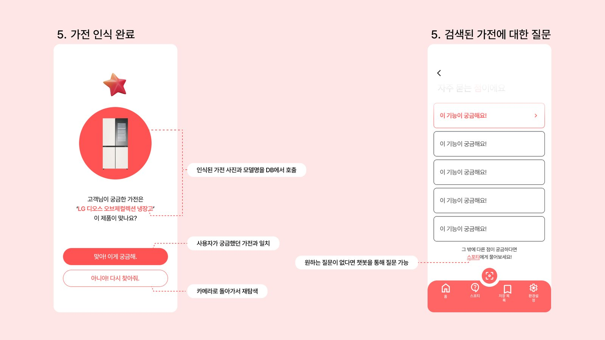
인식이 끝난 뒤 질문으로 이어지는 화면 설계입니다. 인식된 제품 범위 안에서만 답하도록 RAG를 구성해 다른 제품 정보가 섞이지 않게 했습니다.
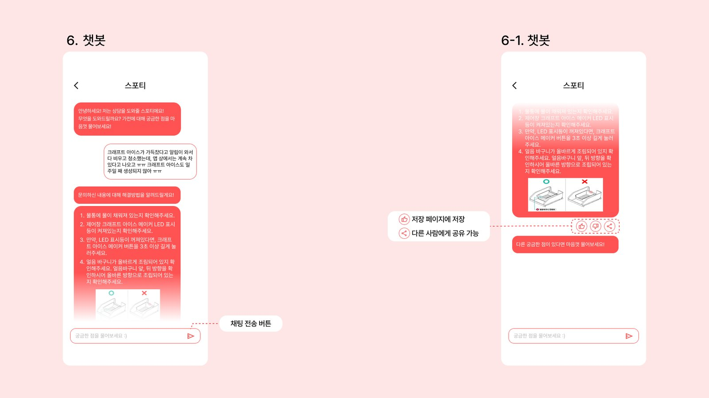
챗봇 대화 화면 설계입니다. 한국어 Llama3 8B를 매뉴얼·오류코드·Q&A로 LoRA 미세조정했고(제가 전담), ChromaDB RAG와 WebSocket 실시간 답변으로 연결했습니다.
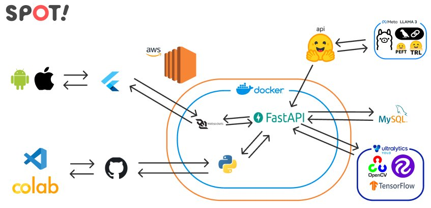
전체 시스템 구성입니다. Flutter 앱 ↔ FastAPI ↔ MySQL 구조이며, 제가 DB 설계와 연동, 모델·백엔드의 Docker 이미지화와 AWS 배포를 맡았습니다.
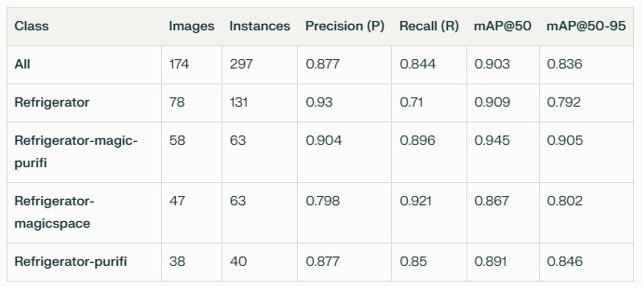
클래스별 인식 성능표입니다. mAP50 0.903, Precision 0.877, Recall 0.844. 수집 이미지 기준 검증 결과이며 실제 사용자 촬영 환경은 별도 검증이 필요합니다.
Project 03
2024.11 · 뉴스빅데이터 해커톤
뉴스 키워드를 가로세로 낱말 퀴즈와 해설로 바꿔 관련 기사로 이어주는 서비스
뉴스 키워드를 가로세로 낱말 퀴즈와 해설로 바꿔 관련 기사로 이어주는 서비스
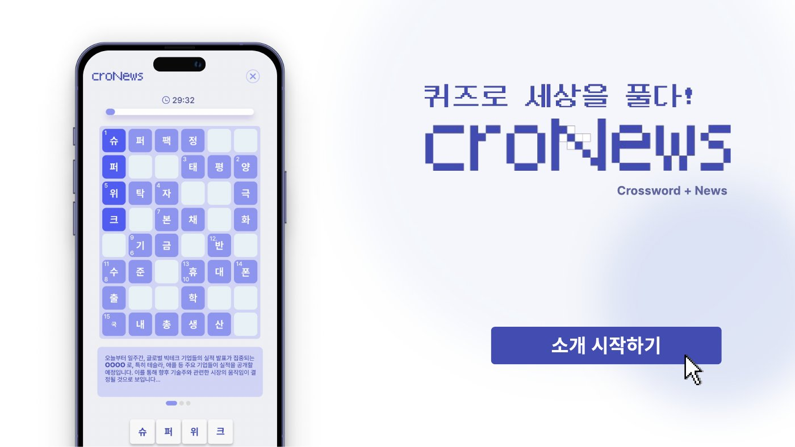
뉴스 키워드를 가로세로 낱말 퀴즈와 해설로 바꿔 관련 기사로 이어주는 서비스의 소개 화면입니다.
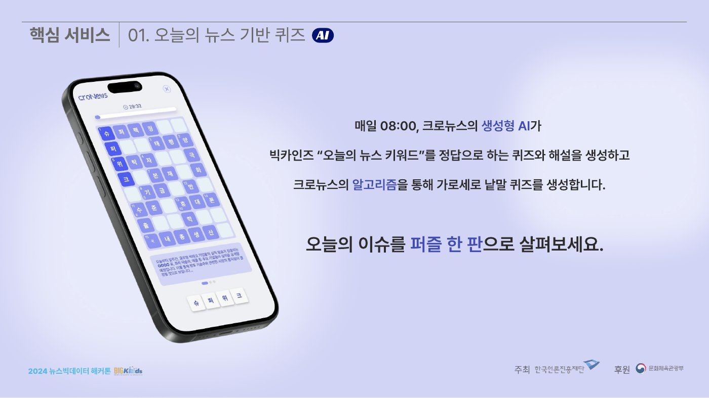
그날의 뉴스에서 뽑은 키워드로 퀴즈를 만들어, 기사를 읽기 전에 핵심 단어부터 접하게 하는 화면입니다.
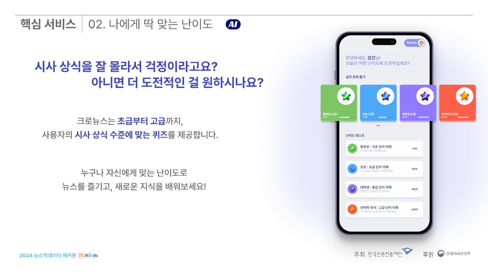
사용자 수준에 맞춰 난이도를 조정하는 기능을 설명한 화면입니다.
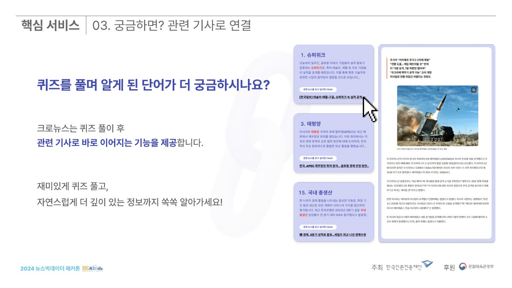
퀴즈를 풀다 궁금해진 주제를 관련 기사로 바로 이어 읽게 하는 흐름입니다.
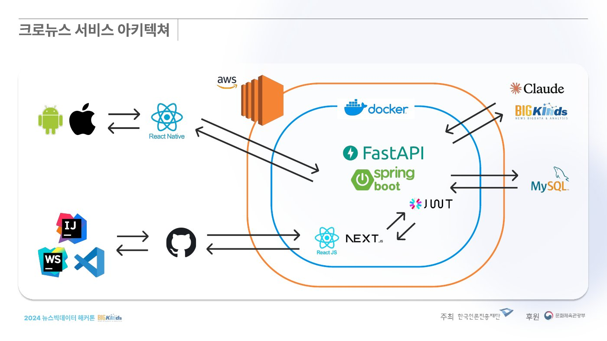
서비스 아키텍처입니다. 저는 뉴스 데이터 수집·전처리와 생성형 AI 연동을 맡았습니다.
Project 04
2024.08 – 09 · LG DX SCHOOL
집 안 가전마다 성격을 부여해 대화하는 공감형 AI 가전톡 웹·앱
집 안 가전마다 성격을 부여해 대화하는 공감형 AI 가전톡 웹·앱
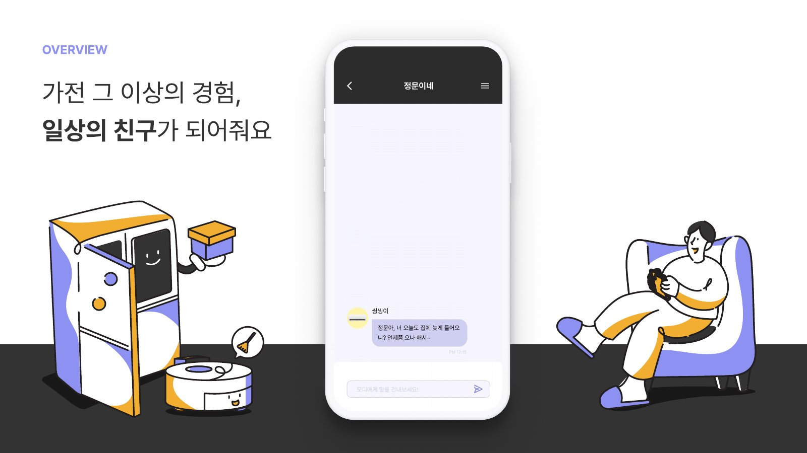
집 안 가전마다 성격을 부여해 대화하는 공감형 AI 가전톡 서비스의 개요입니다.
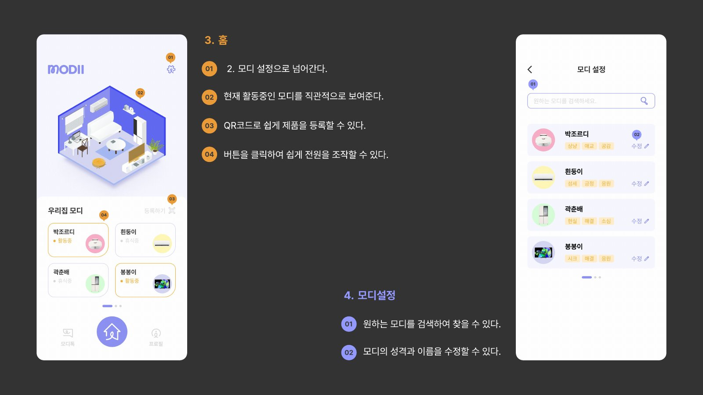
서비스 프로토타입 화면입니다. OpenAI API로 가전별 AI 어시스턴트를 구현했습니다.
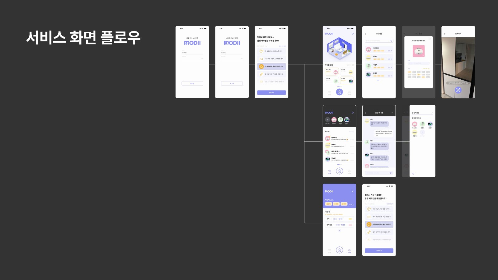
사용자가 서비스를 쓰는 순서를 화면 단위로 이은 플로우입니다.
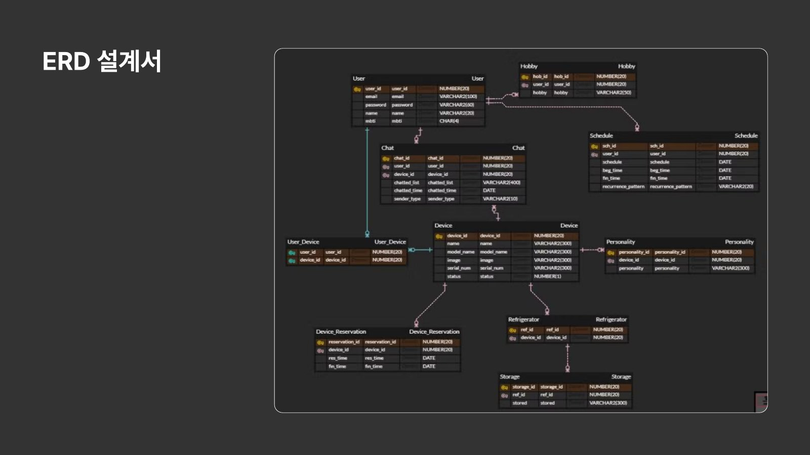
서비스의 ERD 설계서입니다. DB 설계는 제가 담당했습니다.